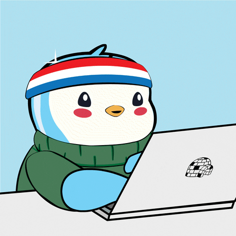
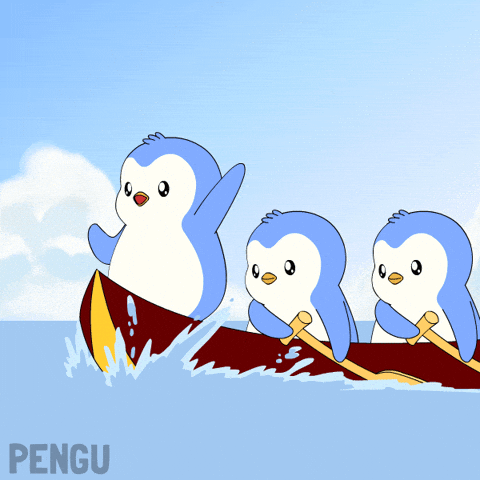
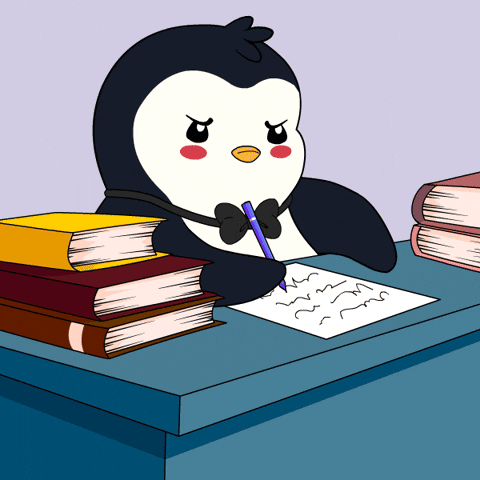
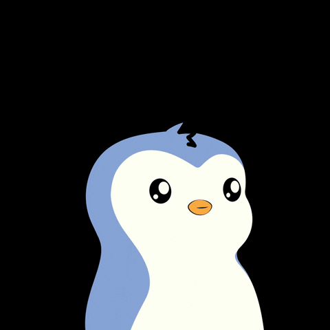
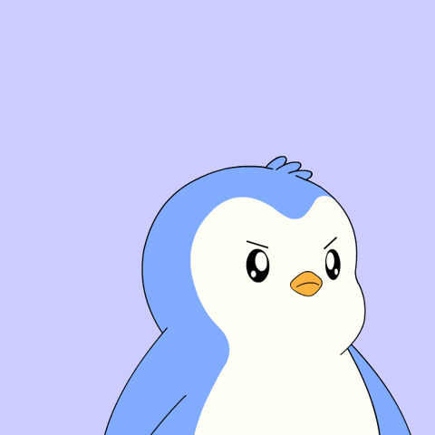

Это было самое начало пути. На этом этапе важно было проникнуться
основами и настроиться на учёбу. И, возможно, подумать, как новые
знания могут повлиять на ваше будущее.
Приобретение новых знаний побуждало во мне чувство новизны и давало
значительный заряд мотивации.
1 спринт: Я — чистый лист
</HTML>
На первых этапах мы работали со страхами и сомнениями, которые часто
испытывают новички. Один из них — страх перед чистым листом. Это,
конечно же, намного сложнее, чем боязнь куска бумаги. Часто за этим
ощущением скрываются более глубокие вопросы: с чего начать? а вдруг
будет слишком сложно? что, если я не справлюсь?
Но метод прогрессивного джипега помог преодолеть страх перед чистым
листом, а метод Помодоро помог управлять временем.
1 спринт: А если не получится?
</HTML>
Первый проект — позади! Но это всё ещё самое начало пути. Радость
могла быстро померкнуть и смениться ожиданием провала. Или вы,
наоборот, могли вдохновиться успехами и поверить в себя.
Место для ваших воспоминаний о начале обучения.
2 спринт: Погоня за идеалом
</HTML>

На этом этапе вы уже достаточно разбирались в основах вёрстки, чтобы
понять, как много ещё впереди. Вы могли попытаться погнаться за
идеалом и понять, что он недостижим. А, может, вы вовсе и не
подвержены перфекционизму и вместо того, чтобы сделать идеально,
старались просто сделать.
Место для ваших воспоминаний о начале обучения.
2 спринт: О тех, кто рядом
</HTML>

Всё это время вы были не одиноки (хотя, возможно, иногда и
чувствовали, что одни против целого мира). Вас окружали одногруппники,
команда сопровождения и просто близкие люди, которым можно
пожаловаться, если очередной макет просто так не поддавался. Осваивать
что-то новое легче, когда рядом есть единомышленники, не правда ли?
Место для ваших воспоминаний о начале обучения.
3 спринт: Обходные стратегии
</HTML>

На этом курсе вы постоянно решали разные задачи. В какой-то момент вам
могло показаться, что решения просто иссякли. Значит, пришло время
посмотреть на задачу под другим углом.
Место для ваших воспоминаний о начале обучения.
3 спринт: Когда опускаются руки
</HTML>

Во время учёбы часто возникает чувство, когда не знаешь, за что
хвататься. Вроде и проектную пора сдавать, и задачи хочется порешать,
и в теории получше разобраться, и жизнь не забыть пожить. В такие
моменты очень нужна концентрация. Вспомните, откуда вы её черпали.
Место для ваших воспоминаний о начале обучения.
«Сейчас я здесь»
</HTML>

Сейчас вы уже очень много знаете о вёрстке. Но это только начало.
Во-первых, впереди ещё много материала про «красотищу». Во-вторых, с
окончанием курса учёба не заканчивается. Вёрстка — это целый мир. И
этот мир постоянно меняется. Познать его полностью не получится, но
это тот случай, когда важен сам процесс познания. Ведь часто путь — и
есть результат.